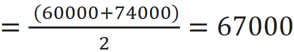

Some people said that I'm a social outlier. As a positive
person, I think that’s a compliment because I'm pretty sure I'm a social outlier at the above quartile,
better than the "mean."
If you haven’t heard about quartiles, then you should stay humble,
unlike Parker, a friend of mine in the land of Fantasie Anna, who was the only
son of a super-rich businessman.
Back in time, when I was his statistics tutor, I didn’t like
him much. Even though he was the hottest boy in school, he was arrogant and
thought that every girl liked him.
In one class, I said, "Suppose I have the following data
about the salary of a company (amount in dollars):
Mico:
1 000 000, 37 000 , 48 000 , 35 000, 50 000, 90 000, 45000 , 60
000 , 42 000 , 74000 , 72 000
What do you think your salary can be?"
"To be humble, I think I'll get an average
amount. I mean the mean," Parker smiled.
I smiled back, "Okay, mean lover, people tend
to evaluate themselves higher than their ability. Since you
say so, you probably should look at the first quartile of the data instead."
"Yeah, you're right! I deserve things for the number one!" Parker excited.
I laughed, "Yeah, right! Do you know what the first
quartile is about?"
Parker was amazed and didn't reply. I tried to hold my laugh,
"When you sort the data from low to high, the median is the middle value that splits
the data into two halves. One is the lower half, which has all the
values bigger than the median, and one has all the values smaller than the
median. Another is the upper half, which comprises all bigger
values than the median. Next, the first quartile, denoted by , is the median of the lower half of
the data set. This means that about
25% of the numbers in the data set lie below , and about 75% lie above ."
"Are you teasing me? So 75% of the people will have salaries higher than me, and only 25% have salaries lower than me????"
"YES!" I couldn’t hold my laugh. I continued,
"AND, the third quartile, denoted by , is the median of the upper half of
the data set. This means that about 75% of the numbers in the data set lie
below , and about 25% lie above .
So, for this data set, sorting from low to high gives us
35 000, 37 000, 42 000, 45 000, 48 000, 50000, 60 000, 72 000,
74 000, 90 000, 1 000 000
This data set has 11 observations. So the middle one, i.e., the
one in the sixth position, which is 50000, is the median.
The lower half is
35 000, 37 000, 42 000, 45 000, 48 000
The upper half is
60 000, 72 000, 74 000, 90 000, 1 000 000
The first quantile is the median of the lower half. Therefore,
it is 42 000."
Yet, that's when the number of observations is odd. Suppose we
have the salary data where the number of observation is even:
Gogog:
1 500 000, 38 000, 60 000, 87 000, 52 000,
95 000, 45000, 78 000, 41 000, 74000
Sorting from low to high gives
38 000, 41 000, 45 000, 52 000, 60 000, 74 000,78 000, 87 000,
95 000,1 500 000
Since the number of observations in this data set is even, the
median is the mean of two middle observations:
Median "
I couldn't help laughing as she looked at Parker's frowning
face. I tried to make a remedy by asking him, "Ok. Suppose your
ability lies at the average. Then what amount should you ask for from your
employer, the mean or the median?"
"The mean!" Parker replied in a tired voice.
"Haha... They're not gonna pay you that much!" I
laughed again.
"Why?"
"Salaries of people such as CEO, manager, etc. are variable
high compared to an ordinary engineer. A CEO's salary can be 500 000, while a
regular engineer’s can be 75000. So, we can call the amount of 500 000 an outlier. An outlier is an observation that is so different from
most of the other observations in the data set as if it does not belong to this
data set.
We should use the median instead of the mean in such a case. If
you request a mean salary, then it is $350 000, which is too high for such a
position."
~*~
If someone said you’re a social
outlier, be happy! They probably mean that you’re an outlier at the upper
quartile. But when you hate someone and tell that person, “You’re a social
outlier,” don’t forget to specify that you are referring to the first quantile!
~
~*~
Note:
Some content in this section is from “Fantasie Anna,” a novel that I may never
finish in the future!! Yet, if you want me to finish it, let me know by leaving
your comments in amazon book reviews!